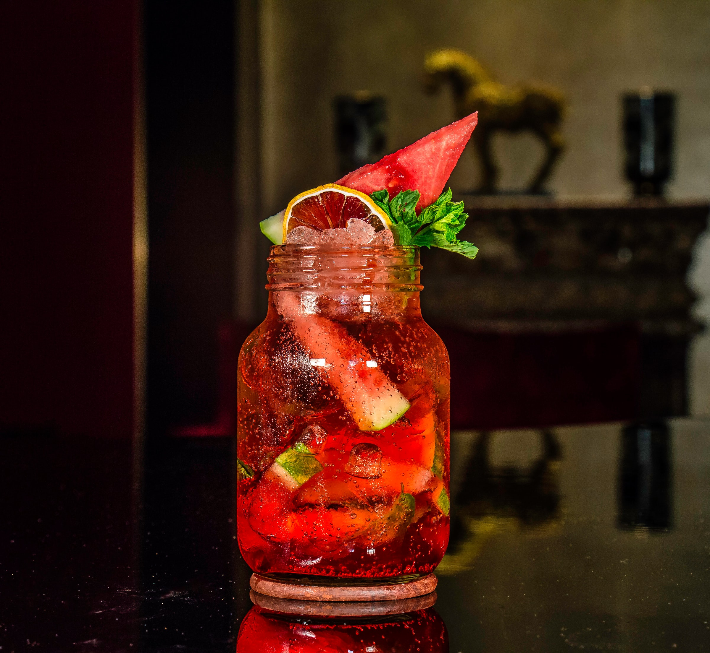

Sangria
The BEST sangria recipe I've been able to hone to perfection! If you like a sweeter Sangria, use ginger ale in place of club soda.
Ingredients
- ½ cup brandy
- ¼ cup lemon juice
- ⅓ cup frozen lemonade concentrate
- ⅓ cup orange juice
- 1 (750 milliliter) bottle dry red wine
- ½ cup triple sec
- 1 lemon, sliced into rounds
- 1 orange, sliced into rounds
- 1 lime, sliced into rounds
- ¼ cup white sugar
- 8 cherries maraschino cherries
- 2 cups carbonated water
Instructions
- In a large pitcher or bowl, mix together the brandy, lemon juice, lemonade concentrate, orange juice, red wine, triple sec, and sugar. Float slices of lemon, orange and lime, and maraschino cherries in the mixture. Refrigerate overnight for best flavor. For a fizzy sangria, add club soda just before serving.